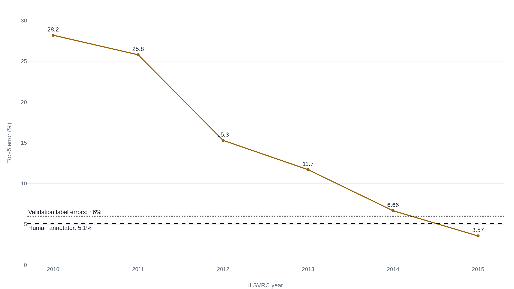

ImageNet lets a model guess five times, then grades it against one flawed label
The score behind AI's 'superhuman' vision dropped below the 5.1% human line by 2015, and later relabelings found nearly a third of the validation images fit more than the single label they were given.
Why this matters
You have read that machines now recognize images better than people do. That claim rests almost entirely on one number: top-5 error on ImageNet, the score that ranked the models from 2010 through 2015 and crossed a human figure in the middle of that run. This lesson builds the number from the image up, so that a stated ImageNet result stops being a slogan and becomes something you can read. By the end you will know exactly what a top-5 score counts as a hit. You will also know the two questions it was never able to answer: whether the single label it grades against is correct, and whose vision the model actually beat.
- 01
- The 'human-level' language score is an average of nine English tests: the matching story in language, where the human line a benchmark crossed was a hurried crowd estimate on tasks that leak their own answers.
- 02
- Rebuild ImageNet's test set and the top model loses eleven points: how much of any accuracy number belongs to the exact test set it was measured on.
- 03
- AlexNet won ImageNet 2012 on two gaming GPUs: the 2012 result behind the first large jump in the curve this lesson reads.
One label per image, five tries to match it
The number lives on a specific contest. The ImageNet Large Scale Visual Recognition Challenge sorted photographs into 1,000 object categories. It gave a competitor about 1.28 million labeled images to train on and 50,000 more, the validation set, to be scored on.1 The rule that made scoring possible is the one to hold onto: every image carries exactly one ground-truth label, however much else is in the frame.1
Two numbers come off that setup. Top-1 error asks the model for its single most confident category and counts the image wrong unless that one guess is the label. Top-5 error is gentler: the model returns five ranked categories, and the image counts correct if any one of the five is the label.1 Accuracy is just the flip side, one minus the error rate, so 3.57% top-5 error and 96.43% top-5 accuracy are the same result stated two ways.
The gap between the two rules is where a plausible near-miss lives. Say an image's label is Siberian husky. A model that ranks Eskimo dog first and Siberian husky second has failed top-1 and passed top-5 on the same photograph. Top-5 was built to forgive that kind of near-miss. The score does not ask whether the model saw the image, only whether the right word survived into a list of five.
The strawberry that also holds an apple
The five-guess rule was not a hedge. It answered a real defect in the data, and the people who ran the challenge named the defect plainly. Because only one category is labeled per image, an image that contains more than one object creates an ambiguity the model cannot resolve. Their example was a photograph labeled strawberry that also holds an apple: an honest classifier does not know which of the two the answer key wants.1
An image might be labeled as a "strawberry" but contain both a strawberry and an apple. Then an algorithm would not know which one of the two objects to name. For the image classification task we allowed an algorithm to identify multiple (up to 5) objects in an image and not be penalized as long as one of the objects indeed corresponded to the ground truth label.1 Russakovsky et al., on why five labels are allowed
That is a reasonable fix, and it worked for its purpose. But top-5 forgives the exact images where one label is not the whole picture. The strawberry case does not go away when the model names both fruits; it is hidden, folded into a correct answer. The metric was quietly counting on the images with multiple objects being rare. They are not.
The fall from 28 percent to below 4
In 2012 the winning entry, AlexNet, posted 15.3% top-5 error against 26.2% for the second-best system, a margin of nearly eleven points that pushed the whole field toward deep neural networks.2 That jump was real: the models got much better at this task, fast. Three years later the winning entry, a 152-layer residual network, reached 3.57% top-5 error.3
Somewhere in that descent the curve passed a human figure. Earlier in 2015 a team at Microsoft reported 4.94% top-5 error and called it, to their knowledge, the first result to surpass the human-level performance of 5.1% that the challenge organizers had measured.4 That sentence became the milestone the public heard. The same paper qualified it in the same breath, and the qualification is the honest reading of the number:
While our algorithm produces a superior result on this particular dataset, this does not indicate that machine vision outperforms human vision on object recognition in general ... machines still have obvious errors in cases that are trivial for humans.4 He et al., in the paper that first passed 5.1%
Two things sat just below the models by 2015: the 5.1% human figure, and the point at which the answer key's own mistakes begin.
The answer key checked against itself
Two groups went back and re-examined the 50,000 validation images, and they measured two different problems with two different numbers. The two are often blurred into one number, and they do not mean the same thing.
The first is ambiguity. When Beyer and colleagues re-annotated the validation set in 2020, they found that roughly 29% of the images either held multiple objects or matched several synonymous ImageNet categories at once. A single label genuinely under-described them.5 The strawberry problem, in other words, was not an edge case; it touched close to a third of the set. Their reassessed, multi-label key changed the standings. Gains that recent models claimed over older ones shrank, and the original ImageNet labels were, in their words, "no longer the best predictors" of the freshly collected labels. Even the strongest models still miss about 11% of images by the original labels and about 9% by the reassessed ones. Much of that remainder is the key being wrong or incomplete, not the model failing to see.5
The second problem is outright error, and it is a smaller number. Northcutt, Athalye, and Mueller flagged suspect labels automatically and had people check them by hand, and confirmed 2,916 plainly wrong labels in the validation set, about 6%.6 That is different again from the challenge organizers' own estimate years earlier, that around 0.3% of a 1,500-image sample was mislabeled.1 Three figures, three definitions. The 0.3% is a small early spot-check of flat errors. The 6% is a careful full count of the same kind of error. The 29% is not error at all: it is the share of images one label cannot fully describe.

It is tempting to conclude that a corrected key would tear up the leaderboard. It does not, and the same paper is careful to say so. After removing or correcting the errors, the relative ranking of models is unaffected.6 The damage is confined to the top, where the results turn unstable. A larger, higher-capacity model tends to have learned the answer key's systematic mistakes better than a small one. So on the slice of images that were mislabeled, the small model can win. On ImageNet with corrected labels, ResNet-18 overtakes the larger ResNet-50 once the share of originally mislabeled test images rises by just 6%.6 The key does not reorder the whole field. It makes the closest comparisons, exactly the ones a state-of-the-art claim rests on, too fragile to trust.
Whose vision the 5.1 percent belonged to
The human figure the models passed has its own thin foundation, best told in the challenge's own record rather than as a general fact about people. The 5.1% was the better of two trained expert annotators' scores. That annotator, Andrej Karpathy, built the labeling tool himself, trained on 500 validation images, then labeled 1,500 test images at about one a minute.17 He was candid about the grind: he "only enjoyed the first ~200, and the rest I only did #forscience."7 His 5.1% edged out the 2014 winning model's 6.8% on that sample, and even his misses were mostly hard cases: about 37% were fine-grained, one dog breed taken for a neighbor.7 The second annotator, who trained on far fewer images, reached only about 12%.1
So the line that machines crossed was one motivated person over many hours, not a population. Karpathy said as much afterward: "human accuracy is not a point. It lives on a tradeoff curve," and more annotators or more care would move it.7 None of this makes the 5.1% dishonest. It makes it a specific, small measurement that the word "superhuman" then treated as a fixed human ceiling.
The cost showed up in how the milestone traveled. In February 2015 Forbes ran the headline "Microsoft's Deep Learning Project Outperforms Humans In Image Recognition." The body kept the researchers' warning that this was not general proof, but the headline is the part most readers carried away.8 A leaderboard sprint followed within months, with Baidu reporting 4.58% against Google's 4.82% and Microsoft's 4.94%, all racing under the same 5.1% banner.9 That race also produced the clearest warning about over-trusting a fraction of a percentage point: Baidu's headline result was later set aside after the organizers found the team had broken the challenge's rules on how many times a system could be tested.9 A quarter-point lead was worth bending the rules for, on a scale where the answer key itself was wrong far more often than that.
The takeaway
A top-5 number tells you how often a model's five guesses caught the one label an image happened to be given. It does not tell you the label was right, and it does not tell you the model beats people at seeing. By 2015 the winning scores had dropped below the 5.1% human figure, which one trained annotator produced over many hours, and into the range where the validation key's own errors live. The progress underneath was genuine: a model in 2015 really was far better than one in 2012. But once the score fell past the human line, it could no longer tell a model that saw better apart from one that had simply learned the answer key's mistakes. Read a stated ImageNet number as what it is, a count of five-guess hits against a single, imperfect label, and it will stop telling you things it was never able to prove.
- 01
- What I learned from competing against a ConvNet on ImageNet: the annotator behind the 5.1% figure, on what the human baseline actually cost to produce.
- 02
- labelerrors.com: browse the flagged ImageNet label errors image by image, the companion site to the Northcutt relabeling.
Sources
- Russakovsky et al. · ImageNet Large Scale Visual Recognition Challenge (IJCV 2015)
- Krizhevsky, Sutskever, Hinton · ImageNet Classification with Deep Convolutional Neural Networks (NIPS 2012)
- He, Zhang, Ren, Sun · Deep Residual Learning for Image Recognition (2015)
- He, Zhang, Ren, Sun · Delving Deep into Rectifiers: Surpassing Human-Level Performance on ImageNet Classification (2015)
- Beyer et al. · Are we done with ImageNet? (2020)
- Northcutt, Athalye, Mueller · Pervasive Label Errors in Test Sets Destabilize Machine Learning Benchmarks (NeurIPS 2021)
- Andrej Karpathy · What I learned from competing against a ConvNet on ImageNet
- Michael Thomsen, Forbes · Microsoft's Deep Learning Project Outperforms Humans In Image Recognition
- Tom Simonite, MIT Technology Review · Baidu's Artificial-Intelligence Supercomputer Beats Google at Image Recognition